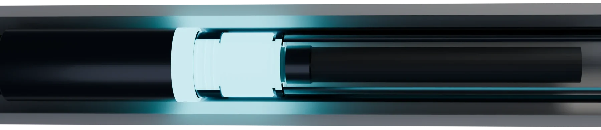

Signal
WellFi sends a low-power wireless pulse from deep inside the well.
Surface readout: pressure 158 kilopascals, temperature 26 degrees Celsius, and vibration 4.2 millimetres per second RMS.
WellFi sends a low-power wireless pulse from deep inside the well.
Pressure, temperature, vibration, and fluid-condition data are captured.
Live telemetry lands in the control system operators already use.
REAL-TIME WIRELESS DOWNHOLE TELEMETRY
Pressure. Temperature. Vibration. At Surface.
WellFi can be added during a pump change or included in a new well. A fiberglass collar creates the antenna gap, the tool sends data through the surrounding formation, and the surface receiver hands the decoded readings to MODBUS RS-485.
Five channels · one tool
Pump-intake and reservoir response pressure at the lift point.
Temperature trends at the tool depth and operating interval.
Pump and string vibration changes before abnormal operation escalates.
Produced-fluid composition changes from the tool location or paired layouts.
Interval behaviour interpreted from paired pressure and fluid-condition trends.
A fiberglass collar electrically separates the tubing string.
The downhole tool sends a low-power electromagnetic signal without a new cable.
A surface receiver and ground reference recover the telemetry.
Readings land on MODBUS RS-485 for the existing RTU or SCADA system.
WHY OPERATORS RUN IT
Know your hydrostatic, understand vibration, avoid pump failure.
Run closer to optimal without flying blind.
Set notifications to ensure your drawdown stays consistent.
See reservoir response at the lift point.
Spot produced-fluid changes as they happen.
Reservoir-fluid monitoring that turns data into production efficiencies.
THE TOOL
WellFi attaches to the interior or exterior of the tubing, on new installs or pump changes. It reports over wireless electromagnetic telemetry, which removes the risk that comes with running a cable.

ABOUT YOTIN
Proudly Indigenous Owned
The Cree word for wind — a force that crosses the land without being seen. WellFi works on the same useful truth: what cannot be seen can still be measured.
Yotin is an Indigenous energy services company based in Pierceland, Saskatchewan, serving the heavy-oil and oil sands corridor across Western Canada.
Pierceland, Saskatchewan, Canada
CANDIDATE WELL REVIEW
Well type, changeout timing, and required data establish deployment fit.
Email Yotinor reach us directly at info@yotinenergy.com
ChatFi
WellFi assistantChatFi is an AI assistant. Conversations may be reviewed to improve the service. Confirm anything that matters directly with Yotin.